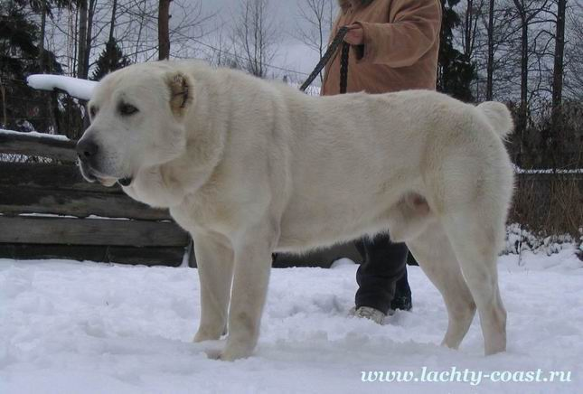

Arkadiy Мартемьянычев
обо мне
любимое животное
о футболе
возраст 9
школа 39
интересы футбол
состав семьи мама, папа, кошка-Ператка, кот-самсон, собака-Таргёз, собака-Луи, сестра бабуля Таня, бабуля Неля,дедуля
любимая еда картошка
любимая учителница Анна Александрова
любимое животные
